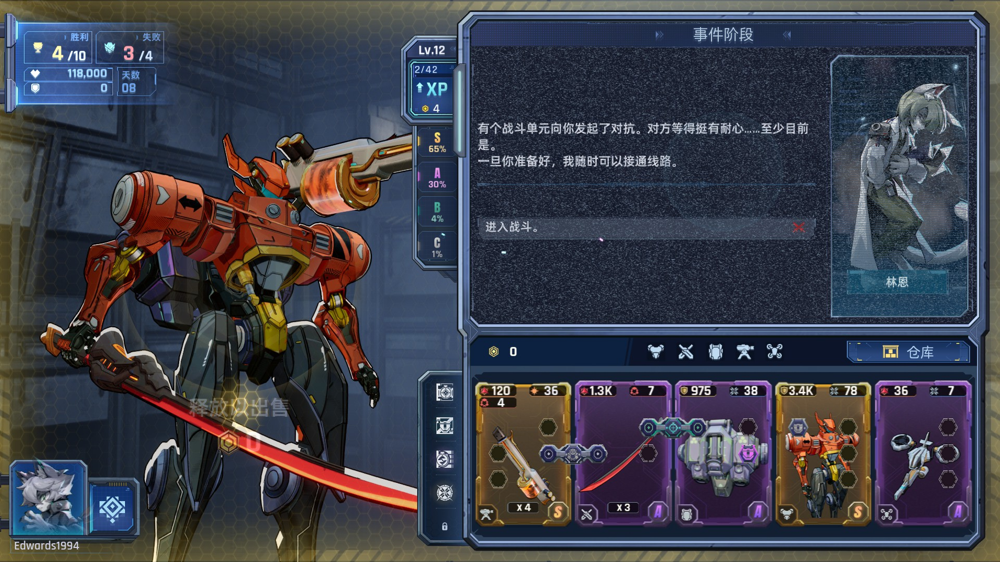
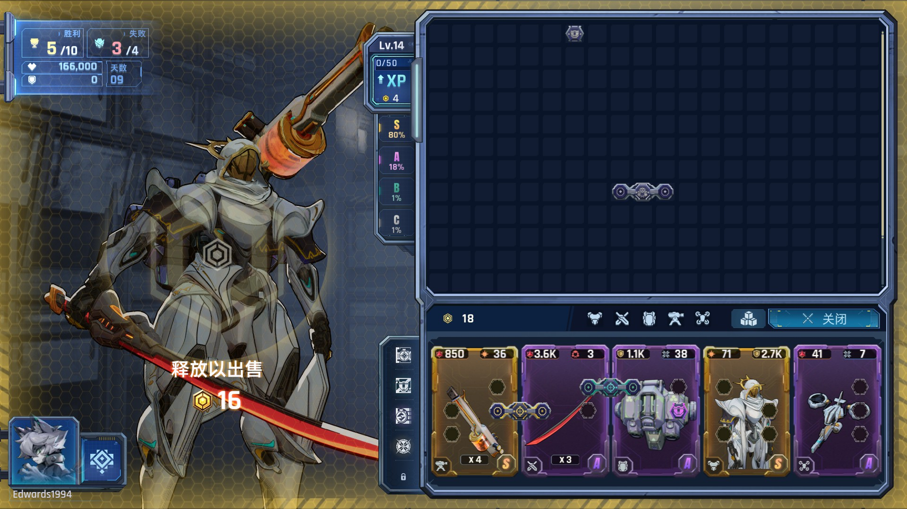
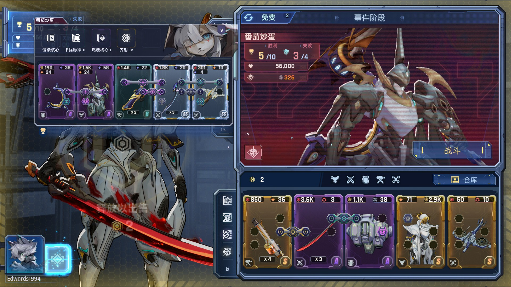
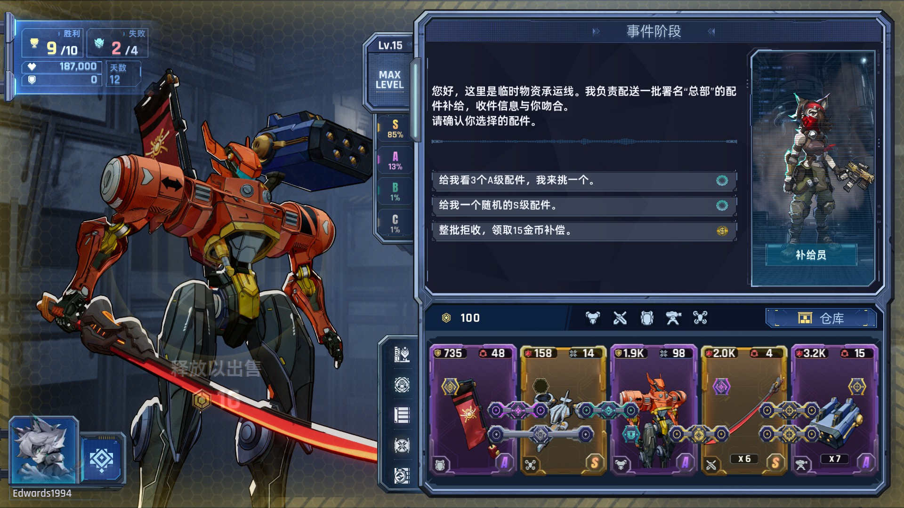
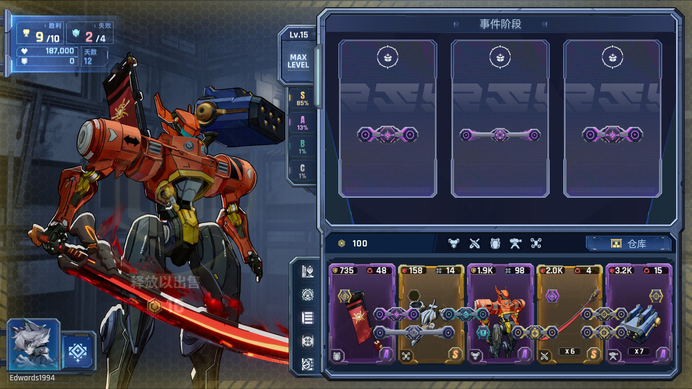

离开商店后，机甲前仍显示「释放以出售」
BUG-003 · 显示异常，触发条件待复测。Windows Steam Demo 1.0.0.2218，Build 26644085，2026-11-15。
怎样观察
- 在黑市打开仓库，把物品拖到左侧出售区，松开后核对物品是否移除和金币余额。
- 关闭仓库，退出商店，进入林恩对话，再展开对手详情。
- 查看机甲前方是否仍有黄色六边形和「释放以出售」。
预期 出售区提示在拖动物品期间可见，退出仓库和商店后收起。
实际 第 8 天已进入林恩对话，第 9 天已展开选敌详情，左侧仍能看到出售提示。第 9 天旧躯干售出后余额 2 → 18，随后也成功购买无人机。观察到的影响是遮挡机甲预览，战斗可以正常开始。
两天分别出现，均经历多次拖放，尚未确定是哪一次拖放触发，以及普通鼠标与自动拖放是否有差异。建议用单次成功出售和单次取消拖动分别复测。



第二局第12天补充证据
2026-11-15 23:43，同一版本。已离开第11天商店并打完战斗，在第12天事件选项和A配件奖励页面仍看到「释放以出售」。本轮也经历过多次成功与失败的拖放，不能从这两张图确定最短触发步骤或复现率；普通鼠标与自动拖放的对照仍待验证。游戏可继续推进，最终该局10胜结束。

